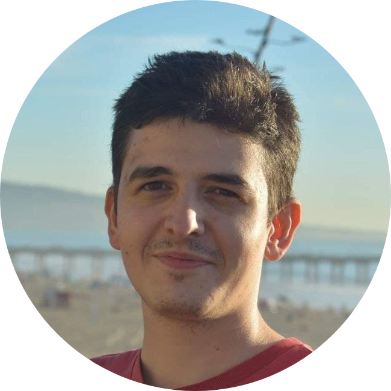

|
Hi there! I am a PhD student in Electrical and Computer Engineering at University of Southern California (USC). I'm fortunate to be advised by Prof. Mahdi Soltanolkotabi. I was an undergraduate student in the Department of Electrical and Electronics Engineering at Bilkent University, where I worked in Imaging and Computational Neuroscience Laboratory (ICON Lab) in National Magnetic Resonance Research Center under the supervision of Prof. Tolga Çukur with a focus on deep learning for accelerated MRI synthesis and reconstruction. |
 |
{kind=link}
|
|
My current research direction aims to explore the analysis of over-parametrized neural networks with small initialization as well as inverse problems like algorithms for low-field MRI reconstruction. Representative papers are highlighted |
|
Website template is proudly stolen from Jon Barron (source code). |

|
Zip-NeRF: Anti-Aliased Grid-Based Neural Radiance Fields
Jonathan T. Barron, Ben Mildenhall, Dor Verbin, Pratul Srinivasan, Peter Hedman ICCV, 2023 (Oral Presentation) project page / video / arXiv Combining mip-NeRF 360 and grid-based models like Instant NGP lets us reduce error rates by 8%–77% and accelerate training by 24x. |